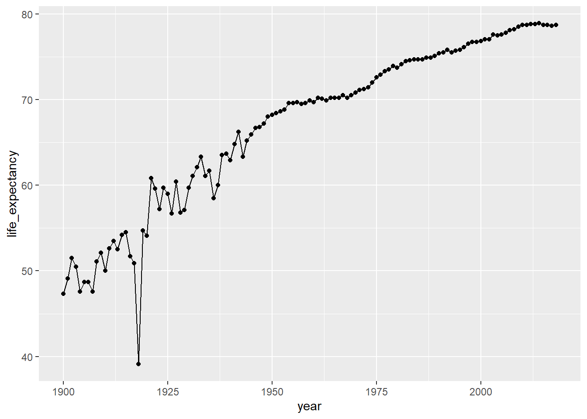

Chapter 7 데이터 시각화
RStudio 사용자에게 가장 매력적인 요소 중 하나는 사용 가능한 풍부한 데이터 시각화 도구 라이브러리이다. 이 장에서는 대부분의 일상 작업에 도움이 될 주요 그래픽 도구를 강조한다. 물론 R 생태계에는 시각화에 사용할 수있는 수백 개의 추가 라이브러리와 특수 패키지가 있다.
지금은 ggplot2 (tidyverse 패키지)부터 즉시 가장 큰 영향을 미칠 도구에 초점을 맞출 것이다. 여기서부터는 사용하기 위해서는 더 많은 작업을 요구하는 시각화를 더 많이 제어 할 수있는 패키지에 대하여 살펴 보기로 한다.
7.1 ggplot2
ggplot2는 필수적인 플로팅을 하게 해 주는 tidyverse 방법이다. 이는 이전 장에서 이미 보았던 데이터 플로팅의 base R 방법을 대체하고 향상시킨다. 지난 장에서 dplyr에 대한 논의에서 기대할 수 있듯이 ggplot2는 데이터 시각화를 수행하는 매우 독자적인 방법을 제공한다. 일일 데이터 탐색과 정적 그래픽이 허용되는 보고서에 포함하기 위해 ggplot2를 사용한다.
ggplot2를 사용하는 방법을 살펴 보자.
첫째, 다른 tidyverse 패키지와 마찬가지로 library() 함수를 사용하여 tidyverse 패키지를 불러온다.
library(tidyverse)
source("process_data.R")##
## -- Column specification --------------------------------------------------------
## cols(
## Year = col_double(),
## Race = col_character(),
## Sex = col_character(),
## `Average Life Expectancy (Years)` = col_double(),
## `Age-adjusted Death Rate` = col_double()
## )tidyverse를 불러온 한 후 코드의 두 번째 줄에서 source() 명령을 사용하여 “process_data.R” 파일에 저장한 모든 코드를 다시 실행했다. 이를 통해 expectation 데이터 세트의 구조를 사용할 수 있게 해 준다.
ggplot2를 사용하기 위해 데이터 세트를 ggplot() 함수로 파이프할 수 있다. 이 함수를 사용하려면 플로팅 할 변수를 지정해야 한다.
expectancy %>% filter(race == "All Races", sex == "Both Sexes") %>%
ggplot(aes(year, life_expectancy))이 코드를 실행하면 그림 7.1과 같이 X축과 Y 축이 이미 정의된 빈 캔버스가 나타난다.
그림 7.1: 빈 ggplot 캔버스
그림 7.1은 X 축에 연도, Y 축에 사망률이 있는 캔버스를 보여주고 있다. 이제 플롯의 범위를 정의했으므로 데이터를 표시하는 시각적 요소를 추가 할 수 있습니다. ggplot 함수를 데이터 스토리를 설명하는 “동사”세트로 파이핑하여 이를 수행한다.
expectancy %>% filter(race == "All Races", sex == "Both Sexes") %>%
ggplot(aes(year, life_expectancy)) +
geom_line()geom_line 동사를 사용하여 데이터를 표현하기 위해 선을 사용하고 싶다고 말했다. 예상 할 수있는 magrittr 파이프 연산자 (%>%)를 사용하는 대신 ggplot2는 파이프에 더하기 기호 (+)를 사용한다. 이 선 플롯의 예는 그림 7.2를 참조하기 바란다.
그림 7.2: 연도 별 사망률 선 플롯
그림 7.2의 플롯은 흥미로운 추세와 나중에 설명할 이상 값(outliers)을 보여주고 있다. 파이프 연산자 +를 사용하여 시각화를 파이핑하여 계속해서 시각화할 수 있다.
선에 점을 추가하려면 geom_point 동사를 사용한다.
expectancy %>% filter(race == "All Races", sex == "Both Sexes") %>%
ggplot(aes(year, life_expectancy)) +
geom_line() +
geom_point()
그러면 그림 7.3과 같이 플롯이 생성된다.
그림 7.3: 라인 플롯에 포인트 마커 추가
이 추세를 성별로 분류하고 싶다면 어떨까? ggplot 라인 플롯에서 이와 같은 하위 그룹을 보려면 분류하려는 geom_line 동사에 새로운 미적(aes) 매개 변수를 추가하기 만하면 된다.
expectancy %>% filter(race == "All Races") %>%
ggplot(aes(year, life_expectancy)) +
geom_line(aes(color = sex))이 시각화의 첫 번째 부분에서는 세 그룹을 모두 살펴 보고자하기 때문에 더 이상 “Both Sexes”를 필터링하지 않는다. 이 코드는 그림 7.4의 플롯을 생성한다.
그림 7.4: ggplot에서 하위 그룹 플로팅
이 그림은 두 성별 간의 관계를 보여준다. geom_line에서 aes의 color 인수를 지정했기 때문에 선이 색상으로 나타난다.
이 장에서 다루고 있는 ggplot에는 훨씬 더 많은 여지가 있다. 레이블 및 제목 옵션과 함께 다양한 유형의 데이터를 표시할 수있는 많은 옵션이 있다. 이 패키지는 본질적으로 RStudio의 시각화 도구이기도 하다. 이 패키지의 사용 방법에 대한 자세한 정보는 공식 웹 사이트 ggplot2를 참조하기 바란다.
7.2 htmlwidgets
ggplot2는 플로팅하는데 필요한 대부분의 기능을 제공하지만, 분석과 상호 작용하거나 매우 전문화된 그래픽을 추가하고 싶을 때가 있다. htmlwidget은 다음과 같은 용도로 사용할 수있는 패키지 모음으로, R 분석에 다음 수준의 시각화를 추가하는데 사용될 수 있다.
htmlwidgets는 원래 웹 사이트 용으로 개발된 오픈 소스 자바 스크립트 위젯을 통합할 수있는 기능을 제공한다. 사용 가능한 전체 위젯 목록을 보려면 웹 사이트를 참고하기 바란다. 이러한 위젯 중 상당수는 시각화하려는 문제 유형에 매우 구체적이다. 지도, 시계열, 네트워크 그래프 및 일부 D3 그래픽에 대한 위젯을 찾을 수 있다.
하나의 htmlwidget, plotly를 사용하여 마지막 섹션에서 만든 플롯을 웹 지원 대화형 위젯으로 바꿀 수 있다. plotly는 gglot2와 함께 작동하고 실제로 ggplo2를 다음 수준으로 가져 가기 때문에 흥미롭다. 다음은 plotly를 사용하여 ggplot2 플롯에 상호 작용을 추가하는데 필요한 것들이다.
library(plotly)
i_plot <- expectancy %>%
filter(race == "All Races") %>%
ggplot(aes(year, life_expectancy)) +
geom_line(aes(color = sex))
ggplotly(i_plot)이 코드는 ggplot2에서했던 것과 매우 유사하다. 그러나 이번에는 결과를 개체에 할당하고 해당 개체를 매개 변수로 ggplotly에 사용하여 그림 7.5에서 볼 수있는 대화형 플롯을 만든다.
그림 7.5: 팝업이 있는 Plotly HTML 위젯
이제 이 플롯에는 세부 정보 팝업과 상단에 탐색 그림이 있는 도구 모음이 포함된다. 이후 장에서 일관된 보고서와 대시 보드를 작성하는 방법을 학슬할 때 이와 같은 위젯을 포함하여 사용자를 위한 풍부한 대화형 환경을 만들 수 있다.
계속 진행하기 전에 DT 패키지의 Datatables 구성 요소를 살펴보자. Datatables는 데이터 세트에 대한 검색 가능한 HTML 프레젠테이션을 생성하는 매우 유용한 대화형 HTML 위젯이다. 예를 들어 데이터 세트의 검색 가능한 버전을 사용자에게 직접 제공하려면 다음과 같이 하면된다.
library(DT)
datatable(expectancy, options = list(pageLength = 10))그러면 데이터로 채워진 검색 가능한 대화형 테이블로 그림 7.6과 같은 위젯이 생성된다.
그림 7.6: 데이터 테이블 위젯
7.3 r2d3
이 장의 처음 두 섹션에서 설명하는 패키지는 모두 대부분의 데이터 유형을 시각화하는 풍부한 개체를 제공한다. 그러나 결국 우리의 그래픽은 다른 사람들이 디자인하고 모든 R 개발자가 사용할 수 있는 그래픽처럼 보일 것이다.
시각화의 모든 측면을 절대적으로 제어하려는 몇 가지 사용 사례가 있다. 우리에게 도움이 되는 위젯이 없거나 고도로 맞춤화된 무언가가 필요하다. 여기서 D3가 우리를 도울 수 있고 r2d3는 D3를 RStudio 프로젝트에 통합하는 데 사용할 수있는 패키지이다.
htmlwidgets와 마찬가지로 D3는 웹 기반 Javascript 솔루션이다. 그러나 D3를 사용하는 것은 htmlwidget으로 하는 것보다 더 복잡하다. D3는 본질적으로 프로그래밍 언어이다.
D3의 핵심 아이디어는 그래픽 프리미티브 (선 및 원과 같은 것)로 데이터 세트를 결합할 수 있다는 것이다. 이러한 그래픽은 데이터 세트의 값에 따라 늘어나거나 줄어 들게 된다. D3 그래픽은 모양을 제어할 수 있기 때문에 매우 복잡해질 수 있다. D3의 학습은 범위를 벗어나지만 시작하기 위한 간단한 방법은 살펴보기로 한다.
NOTE 여기에서 설명하는 기능을 사용하려면 다운로드한 RStudio의 현재 버전에서 사용할 수있는 RStudio 1.2가 필요하다. 그러나 이 장에서 사용된 버전은 RStudio의 미리보기 버전이므로 스크린 샷이 다소 다르게 보일 수 있다.
D3를 사용하려면 RStudio 메뉴로 이동 한 다음 “파일,” “새 파일,” “D3 스크립트”를 차례로 선택합니다. D3 코드가있는 파일이 나타납니다.
// !preview r2d3 data=c(0.3, 0.6, 0.8, 0.95, 0.40)
//
// r2d3: https://rstudio.github.io/r2d3
var barHeight = Math.ceil(height / data.length);
svg.selectAll('rect')
.data(data)
.enter().append('rect')
.attr('width', function(d) { return d * width; })
.attr('height', barHeight)
.attr('y', function(d, i) { return i * barHeight; })
.attr('fill', 'steelblue');이 파일의 코드는 Javascript이며 이 코드를 수정하여 시각화를 조정할 수 있다. 이 파일을 저장하고 “미리보기” 버튼을 클릭하여 D3 시각화가 어떻게 보이는지 확인한다. 앞서 강조한 사전 패키징된 솔루션과 비교하면 별로 좋아 보이지 않지만, D3는 실제로 그릴 수있는 캔버스를 더 많이 제공하므로 괜찮다.
미리보기는 단순히 파일의 주석에 있는 코드를 사용하지만 R 스크립트 파일에서 자체 데이터를 제공하는 경우 r2d3 라이브러리를 사용하여 수행할 수 있다.
library(r2d3)
r2d3(data = c(.1,.2,.3,.4,.3,.2,.1),
script = "d3_plot.js")이 코드는 그림 7.7의 플롯을 생성한다.
그림 7.7: 기본 D3 플롯
분명히 이것은 매우 기본적인 시각화이다. r2d3 웹 사이트에서 D3로 할 수있는 멋진 시각화 전체 세트를 확인할 수 있다. 이러한 예제에는 사용자 고유의 D3 사용자 지정 시각화를 위한 시작점으로 사용할 수 있도록 해주는 필요한 코드도 포함하고 있다.
7.4 결론
base R 플롯 기능 외에도 R에서 데이터 시각화를 위한 많은 옵션이 있다. ggplot은 대부분의 분석가가 대부분의 시간에 필요한 작업을 수행하는 매우 강력하고 독자적인 방법을 제공한다.
r2d3 및 htmlwidgets와 같은 패키지는 보다 전문화된 사용 사례를 지원한다. 훨씬 더 전문화 된 시각화 옵션을 사용할 수 있으며 이러한 모든 기능은 이후 장에서 설명할 대시 보드와 보고서 옵션에서 사용할 수 있다.